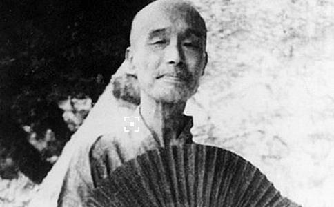

长亭外，古道边，芳草碧连天。晚风拂柳笛声残，夕阳山外山……
历数中国近代
弘一大师俗姓李，名文涛，字叔同。一八八零年十月二十三日生于天津。大师乃世家子弟，自 幼受到良好的教育。喜读唐、五代诗词，尤爱王维诗。后又师从津门书印名家唐静岩学篆书及治印。一九零五年东渡日本留学，在东京上野美术学校学习西洋
李叔同天资聪颖且学贯中西，这给他多姿多彩的人生、在俗及出家后做出的斐然成绩打下了良 好的基础。他自幼似乎就与佛有缘，十五岁时即能写出“人生犹似西山月，富贵终如草上霜。”这样的诗句，很有堪破红尘的意味。然而随着年龄的增长，这位才子 胸中那颗滚烫的拳拳报国之心也曾狂跳。
一九一一年十月十日，辛亥革命爆发，逾年清帝被迫宣告退位，结束了清朝政府的统治。民国肇始，群情高涨，百废待兴。李叔同豪情万丈，填下了一首足以言志的《满江红》：
皎皎昆仑，山顶月，有人长啸。看囊底，宝刀如雪，恩仇多少。双手裂开鼷鼠胆，寸金铸出民权脑。算此生，不负是男儿，头颅好。荆轲墓，咸阳道，聂政死，尸骸暴。尽大江东去，余情还绕。魂魄化成精卫鸟，血花溅作红心草。看从今，一担好山河，英雄造。
一九一二年，李叔同加入了进步文学团体“南社”，并与社友姚雨平、叶楚伧、柳亚子等创办 了《太平洋》报。在该报任主笔期间，李叔同充分发挥了他的书法、绘画、诗文等艺术才能。同时他与许多文艺界人士广泛交游，这其中就有富有传奇色彩的陈师曾、苏曼殊两位。此后，李叔同应邀到杭州的浙江两级师范学校任教。
出生在北方的李叔同，来到风景秀丽甲天下的江南水乡，清雅毓秀的西湖山水更激发了他的艺术灵感，使他的才情得到了升华。
在杭州浙师任教的六年里，他醉心艺术教育，培养出了
春风吹面薄于纱，春人状束淡如画。游春人在画中行，万花飞舞春人下。梨花淡
这其中最为后人熟知和广为传唱的，是被导演吴贻弓选做电影《城南旧事》主题歌的歌曲《送 别》：“长亭外，古道边，芳草碧连天。晚风拂柳笛声残，夕阳山外山。天之涯，地之角，知交半零落。一瓢浊酒尽余欢，今宵别梦寒。”悲怆、苍凉，意境深邃。 不过，李叔同在杭州的这些创作，在他个人看来，无疑已是他艺术生涯的“晚钟”了。从他一九一五年，创作的歌曲《月》中可隐约看出他内心世界的情绪变化：
仰碧空明明，朗月悬太清，瞰下界暗暗，世路多愁叹！惟愿灵光普万方，披除
他痛恨下界的黑暗，哀叹
化身恒河沙数，发大声音。尔时千佛出世，瑞霭氤氲。
李叔同与佛教的因缘由来已久。他每个时期的经历多少都与佛道有着直接或间接的关系。他的 父亲对
弘一法师在出家的最初五年里，云游四方，到过许多寺院。在他俗界朋友的心目中，他已成为 了一个苦行僧。在弘一法师同时代的僧人中，他最崇拜的是，“弘扬
弘一大师完全尊承了
夏丏尊发现，弘一法师的行李十分简单，一个铺盖还是用破席子包着的。到了白马湖，夏丏尊把他安排在春社住下。只见弘一法师亲自把铺盖打开，将破旧的席子珍重地铺在床上，摊开了被，又把衣服卷了几件充作枕头，最后取出一块又黑又破的毛巾
夏丏尊实在不忍心，就说：“这手巾太破了，替你换一条好吗？”
“哪里！还好用的，和新的差不多。”弘一法师说此话时，特意把毛巾又珍重地张开来给夏丏尊看，意思是并不十分破 旧。中午之前夏丏尊把饭和两碗素菜送去，弘一法师吃饭时，夏丏尊就在他旁边陪着。这菜无非是
一九
昨日曾将今日期，出门倚仗又思维。
为僧只合居山谷，国士筵中甚不宜。
弘一法师以苦行僧姿态，处处严格要求自己。在他皈依佛门苦心
枕上片时春梦中，行尽江南数千里。庄生梦蝴蝶，
弘一大师晚年除了苦心修行外，还不辞劳苦，四处弘法倡佛、授业讲经，闽南很多寺院都留下了他的足迹。同时还专心著述，这一时期也是他佛学思想成熟阶段，他的绝大部分佛学著述均完成于这段时间。弘一大师把撰著与弘法有机的结合起来，其功德十分彰显。
一九四二年十月十三日傍晚，一代高僧弘一大师，怀着“悲欣交集”的复杂心情，往生极乐了。他